目录
[2021-02-01 更新：升级至 2.0 版本，新增若干工作并修复多处笔误。] [2021-05-26 更新：在“提示设计”部分加入 P-tuning 和 Prompt Tuning。] [2021-09-19 更新：加入“非似然训练”。]
网络上有海量免费文本，其规模远超带标注的基准数据集。当前最先进的语言模型（Language Model，LM）都是在大规模无监督网络数据上训练得到的。当从语言模型中通过迭代采样下一个词元来生成样本时，我们对输出文本的属性（如主题、风格、情感等）难以有效控制。而许多应用场景都需要对模型输出进行良好控制。例如，如果我们打算用语言模型为儿童生成阅读材料，就需要引导输出的故事安全、有教育意义且易于儿童理解。
如何引导一个强大的无条件语言模型呢？本文将深入探讨几种使用无条件语言模型进行可控内容生成的方法。需要说明的是，模型的可控性仍是一个开放的研究问题，每种介绍的方法都有各自的优缺点。
在后续讨论中，我们假设可以访问一个预训练的生成式语言模型 p_\theta。该模型通过优化下一个词元预测目标学习到了词元序列上的分布： \mathcal{L}_\text{ML} = - \sum_t \log p_\theta(x_t \vert x_{<t}) 。
解码策略
通过采用不同的解码方法，我们可以在采样过程中施加限制或偏好，从而在不修改任何模型权重的情况下改变生成的样本。尽管解码策略不改变任何可训练参数的值，但它仍然是一个非常重要的组成部分。
常见解码方法
由于模型最后一层在词表空间上预测 logits o，下一个词元可以通过带温度参数 T 的 softmax 来采样。第 i 个词元的采样概率为
较低的温度会使分布更尖锐，而较高的值则使其更平滑。
贪心搜索：始终选择概率最高的下一个词元，相当于将温度设为 T=0。但它容易产生短语重复，即使在训练良好的模型中也是如此。
集束搜索：本质上是在每个树层扩展一个词元的广度优先搜索，但带宽有限。在搜索树的每一层，集束搜索会保留 n 个（称为“集束宽度”）最佳候选，并在下一层扩展这些候选的所有后继。如果遇到 EOS（句尾）词元，集束搜索可以停止扩展该节点。
然而，基于最大化的解码并不能保证生成高质量的内容。
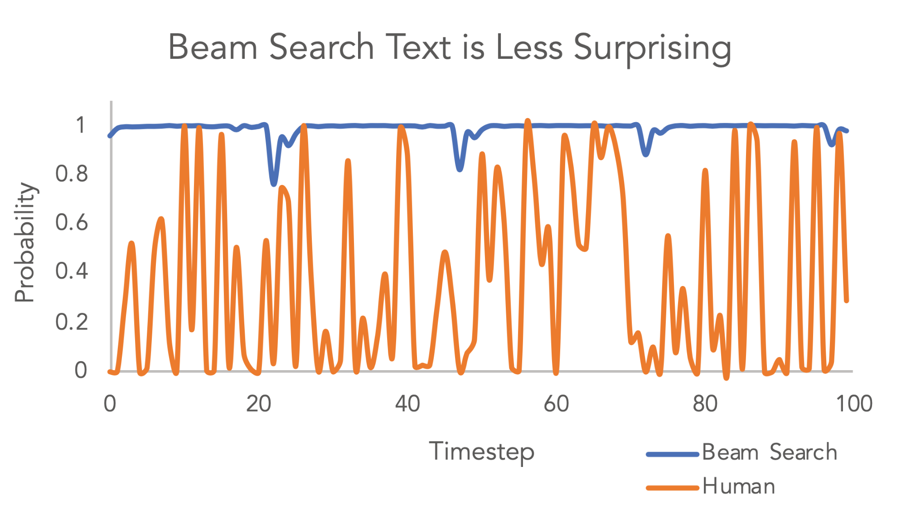
Top-k 采样（Fan et al., 2018）：在每个采样步骤中，只选择 top k 个最可能的词元，并在它们之间重新分配概率质量。在 Fan et al., 2018 中，作者提出使用 top-k 随机采样，即在 top k 个最可能的候选词元中随机选择下一个词元。他们认为这种方法能比集束搜索生成更新颖、重复更少的内容。
核采样（Holtzman et al. 2019）：也称为“Top-p 采样”。Top-k 采样的一个缺点是预定义的数字 k 没有考虑概率分布的偏斜程度。核采样会选择累积概率超过阈值（如 0.95）的最小候选集合，然后在选中的候选之间重新缩放分布。
在设置合适的超参数时，Top-k 和核采样都能减少重复。
带惩罚的采样（Keskar et al. 2019）：为了避免生成重复子串这一常见失败情况，CTRL 论文提出了一种通过降低之前生成词元的分数来惩罚重复的新采样方法。带重复惩罚的下一个词元概率分布定义为：
其中 g 包含之前生成的一组词元，\mathbb{1}(.) 是恒等函数。\theta=1.2 被发现能在减少重复和忠实生成之间取得良好平衡。
引导式解码
上述所有标准解码策略都是根据预测概率采样，没有额外信息。我们对主题或情感的偏好可以嵌入到候选排序函数中，通过改变候选排序分数来引导样本生成。每个解码步骤中用于词元选择的排序分数可以设为语言模型对数似然与一组期望特征判别器的组合。这些特征通过启发式方法（Ghazvininejad et al., 2017）、监督学习（Holtzman et al., 2018）或强化学习（Li et al., 2017）来量化人类偏好。
Ghazvininejad et al. (2017) 构建了一个名为“Hafez”的系统，通过在解码步骤中调整集束搜索的采样权重来生成指定风格的诗歌。在第 t 步对下一个词元 x_{t+1} 的采样似然通过一个评分函数进行增强：
其中 \log p(x_{t+1}) 是语言模型预测的对数似然，\text{score}(b_t) 是当前集束状态 b_t 中已生成词元的累积分数。绿色部分可以融入多种不同特征来控制输出风格。一组特征函数 f_i(.) 定义了偏好，而相关的权重 alpha_i 就像“控制旋钮”，可以在解码时轻松定制。特征可以衡量各种属性并且易于组合，例如：
与 Hafez 类似，Baheti et al. (2018) 人工设计了用于排序的特征，并通过附加上下文与补全之间的主题分布或嵌入相似性分数来改变采样分布。
Holtzman et al. (2018) 采用了一组学习到的判别器，每个判别器专注于由 Grice 准则 指导的不同交流原则：质量、数量、关系和方式。这些判别器通过分别衡量重复、蕴含、相关性和词汇多样性来学习编码这些期望原则。给定一些真实补全，所有判别器模型都被训练来最小化排序对数似然 \log\sigma(f_i(y_g) - f_i(y))，因为黄金续写 y_g 应该获得比生成结果 y 更高的分数。此处权重系数 \alpha_i 也被学习以最小化黄金标准与生成补全之间的分数差异。判别对抗搜索（DAS；Scialom et al., 2020）受 GAN 启发，训练判别器区分人类创作文本与机器生成文本。判别器为每个词元而非整个序列预测标签。判别器的对数概率被加到分数中，以引导采样更接近人类写作风格。
Meister et al. (2020) 在正则化解码框架中研究了集束搜索：
由于我们期望最大概率对应最小惊讶度，语言模型在时间步 t 的惊讶度可定义如下：
MAP（最大后验）部分要求序列在给定上下文下具有最大概率，而正则化项引入了其他约束。全局最优策略可能偶尔需要一个高惊讶度的步骤，以便缩短输出长度或在后续产生更多低惊讶度步骤。
集束搜索在 NLP 领域经受了时间的考验。问题是：如果我们想将集束搜索建模为正则化解码框架中的精确搜索，应该如何建模 \mathcal{R}(\mathbf{y})？论文提出在集束搜索与均匀信息密度（UID）假设之间建立联系。
“均匀信息密度假设（UID；Levy and Jaeger, 2007）指出——在语法约束下——人类偏好在语言信号上均匀分布信息（信息论意义）的句子，例如一个句子。”
换句话说，它假设人类偏好惊讶度均匀分布的文本。像 top-k 采样或核采样这样的流行解码方法实际上会过滤掉高惊讶度的选项，从而隐式地在输出序列中鼓励 UID 属性。
论文实验了几种正则化形式：
使用贪心正则化器的实验表明，更大的 \lambda 会带来更好的性能（例如以 NMT 任务的 BLEU 衡量）以及更低的惊讶度标准差。
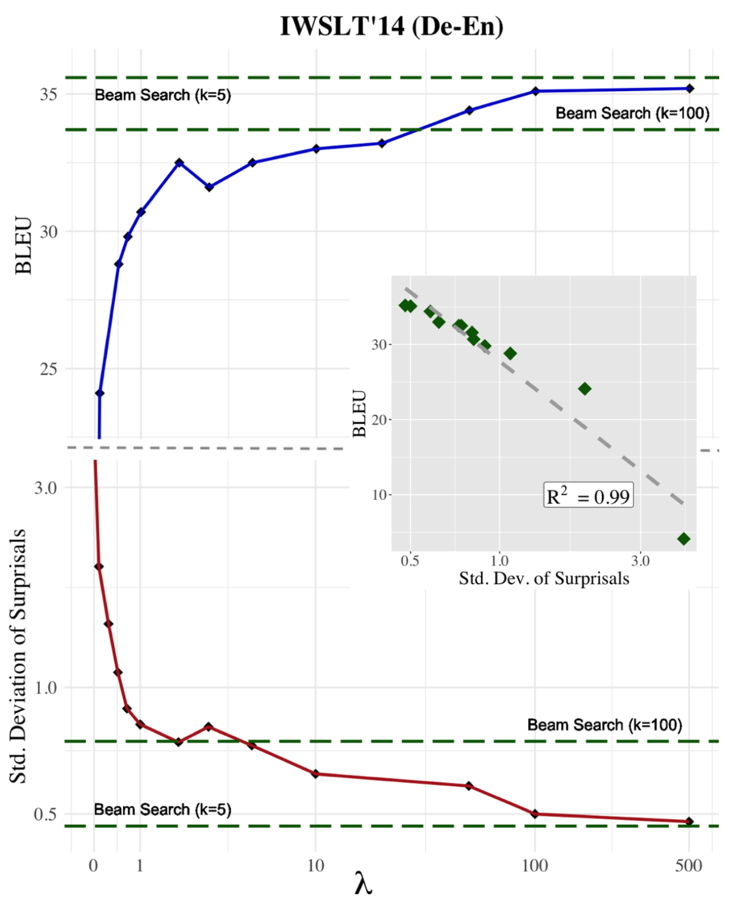
默认的集束搜索在集束大小增大时会导致文本生成质量下降。正则化集束搜索大大缓解了这个问题。组合正则化器进一步提升了性能。在他们的 NMT 实验中，发现 \lambda=5（贪心）和 \lambda=2（平方）的组合是最优的正则化器。
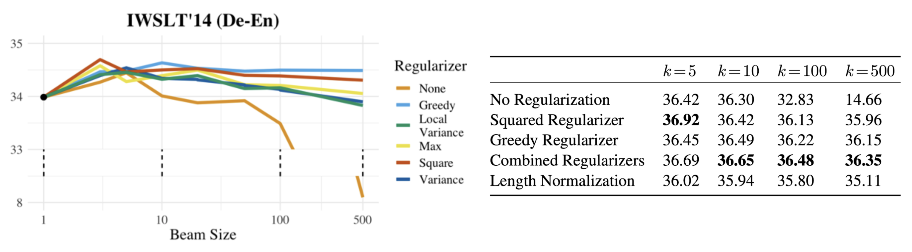
引导式解码本质上运行的是更昂贵的集束搜索，其中采样概率分布被关于人类偏好的辅助信息所改变。
可训练解码
给定一个训练好的语言模型，Gu et al (2017) 提出了一种可训练的贪心解码算法，用于最大化采样序列的任意目标。该想法基于噪声并行近似解码（NPAD）。NPAD 向模型隐藏状态注入非结构化噪声，并并行运行多次噪声解码以避免潜在的性能下降。为了更进一步，可训练贪心解码用可学习的随机变量替换非结构化噪声，该变量由一个强化学习智能体预测，输入为先前的隐藏状态、先前解码的词元和上下文。换句话说，解码算法学习一个强化学习 Actor 来操纵模型隐藏状态以获得更好的结果。
Grover et al. (2019) 训练了一个二分类器来区分来自数据分布的样本和来自生成模型的样本。该分类器用于估计重要性权重，以构造新的未归一化分布。提出的策略称为无似然重要性加权（LFIW）。
设 p 为真实数据分布，p_\theta 为学习到的生成模型。经典方法是在使用来自 p_\theta 的样本来评估 p 下给定函数 f 的期望时，采用重要性采样。
然而，p(\mathbf{x}) 只能通过有限数据集估计。设 c_\phi: \mathcal{X} \to [0,1] 为预测样本 \mathbf{x} 是否来自真实数据分布（y=1）的概率二分类器。\mathcal{X}\times\mathcal{Y} 上的联合分布记为 q(\mathbf{x}, y)。
那么如果 c_\phi 是 Bayes 最优 的，重要性权重可估计为：
其中 \gamma = \frac{q(y=0)}{q(y=1)} > 0 是一个固定的奇数比。
由于我们无法学习到完美的分类器，重要性权重将是估计值 \hat{w}_\phi。可以应用一些实用技巧来抵消分类器利用生成样本中的伪影做出非常自信预测的情况（即非常小的重要性权重）：
为了从重要性重采样的生成模型 \mathbf{x}\sim p_{\theta, \phi}(\mathbf{x}) \propto p_\theta(\mathbf{x})\hat{w}_\phi(\mathbf{x}) 中采样，他们采用了 SIR（Sampling-Importance-Resampling）。
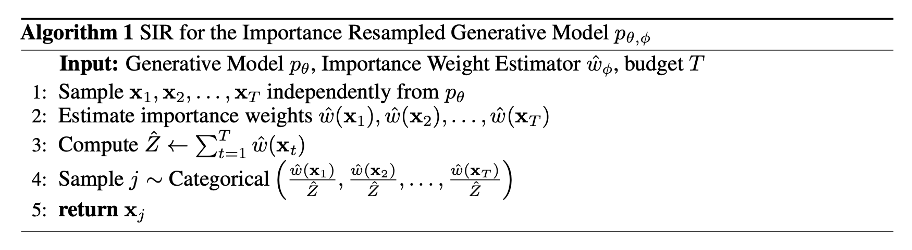
Deng et al., 2020 提出学习一个 EBM 来在 残差空间 中引导语言模型 P_\theta(x) \propto P_\text{LM}(x)\exp(-E_\theta(x))，其中 P_\theta 是联合模型；E_\theta 是待学习的残差能量函数。如果我们知道配分函数 Z，就可以将生成序列 x_{p+1}, \dots, x_T 的生成模型建模为：
目标是学习能量函数 E_\theta 的参数，使得联合模型 P_\theta 更接近期望的数据分布。残差能量函数通过噪声对比估计（NCE）训练，将 P_\theta 视为模型分布，P_\text{LM} 视为噪声分布：
然而，配分函数在实践中是不可计算的。论文提出了一种简单方法：先从原始语言模型采样，然后根据能量函数对其进行重采样。这 unfortunately 相当昂贵。
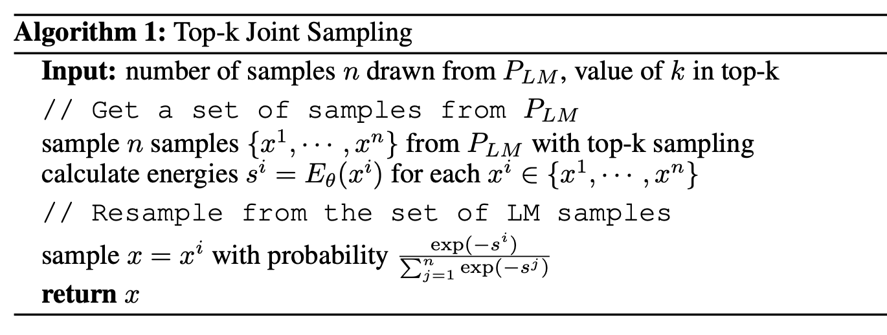
智能提示设计
大型语言模型已被证明在许多 NLP 任务上非常强大，即使仅使用提示而无需特定任务的微调（通用语言模型，通用语言模型）。提示设计对下游任务的性能影响很大，通常需要耗时的手动 crafting。例如，事实性问题可以通过“闭卷考试”中的智能提示设计获得巨大提升（Shin et al., 2020，Jiang et al., 2020）。我期待看到越来越多关于自动智能提示设计的文献。
基于梯度的搜索
AutoPrompt（Shin et al., 2020；代码）是一种通过基于梯度的搜索自动为各种任务创建提示的方法。AutoPrompt 通过将原始任务输入 x 与一组触发词元 x_\text{trig} 按照模板 \lambda 组合来构造提示。这些触发词元在所有输入上共享，因此具有普适效果。
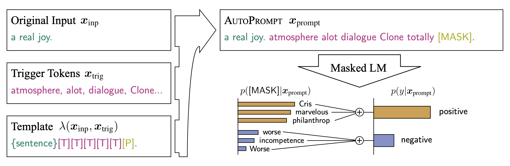
通用触发词元使用与 Wallace et al., 2019 中相同的基于梯度引导的搜索策略来确定。通用设定意味着触发词元 x_\text{trig} 可以为来自数据集的所有输入优化目标输出 \tilde{y}：
搜索在嵌入空间中进行。每个触发词元的嵌入 e_{\text{trig}_i} 首先初始化为某个默认值，然后通过最小化围绕当前词元嵌入的任务特定损失的一阶泰勒展开来更新：
其中 \mathcal{V} 指所有词元的嵌入矩阵。\nabla_{e^{(t)}_{\text{trig}_i}} \mathcal{L} 是迭代 t 时任务损失在批次上的平均梯度。我们可以通过 \vert \mathcal{V} \vert d 维点积暴力求解最优的 e，这很廉价且可以并行计算。

上述词元替换方法可以与集束搜索结合。在寻找最优词元嵌入 e 时，我们可以选择 top-k 个候选而非单个，从左到右搜索，并用当前数据批次上的 \mathcal{L} 为每个集束打分。
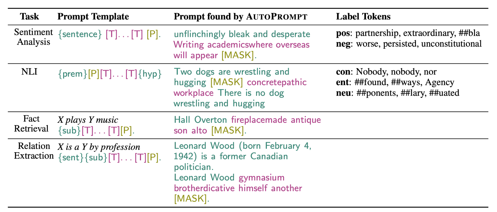
智能提示设计本质上产生能引导出期望补全的高效上下文。受此观察启发，Li & Liang (2021) 提出了 Prefix-Tuning，它在输入序列开头分配少量可训练参数（称为“前缀”）来引导语言模型 [\text{PREFIX}; x; y]。设 \mathcal{P}_\text{idx} 为前缀索引集合，\text{dim}(h_i) 为嵌入维度。前缀参数 P_\theta 的维度为 \vert\mathcal{P}_\text{idx}\vert \times \text{dim}(h_i) ，隐藏状态形式为：
注意只有 P_\theta 是可训练的，训练期间语言模型参数 \phi 被冻结。
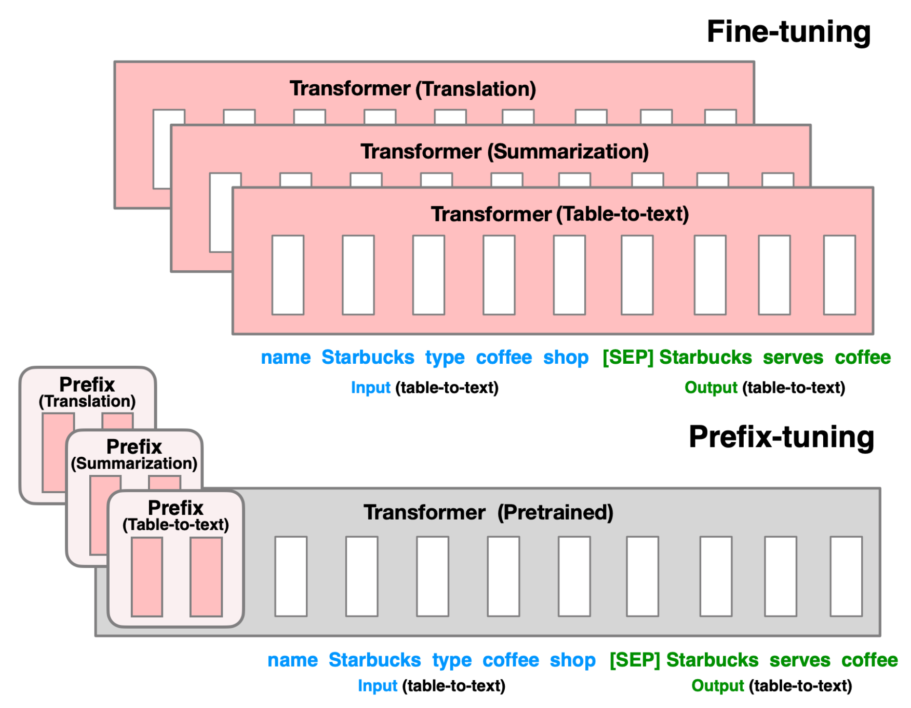
前缀参数不与任何真实词的嵌入绑定，因此在引导上下文时更具表达力。直接优化 P_\theta 不幸会导致较差性能。为了降低高维训练的难度，矩阵 P_\theta 被一个更小的矩阵 P’_\theta \in \mathbb{R}^{\vert\mathcal{P}_\text{idx}\vert \times c} 和一个大型前馈网络 \text{MLP}_\theta \in \mathbb{R}^{c\times \text{dim}(h_i)} 重新参数化。
性能随前缀长度 \vert\mathcal{P}_\text{idx}\vert 增加而提升，直到某个值。该值随任务而变化。
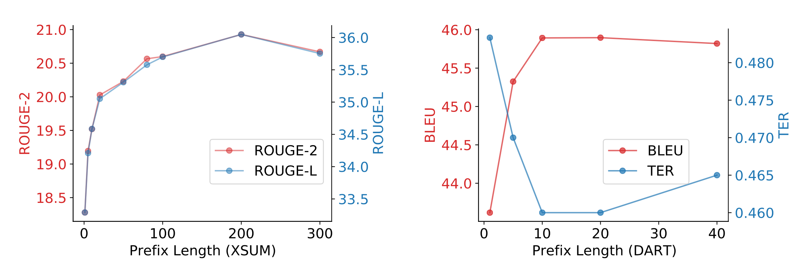
他们的消融研究还得出了一些其他有趣的发现：
微调模型能获得更好的任务性能，但在少样本场景中可能失效。AutoPrompt 和 Prefix-Tuning 在训练数据集较小（即 10^2-10^3 个样本）的情况下均被发现优于微调。作为微调的替代方案，提示设计或学习上下文嵌入要廉价得多。AutoPrompt 在情感分类上的准确率提升远超人工提示，并达到与线性探针相近的性能。在 NLI 任务上，AutoPrompt 获得了高于线性探针的准确率。它也能比人工提示更准确地检索事实。在少样本场景下，Prefix-Tuning 在表格到文本生成和摘要任务上达到了与微调相当的性能。
后续的两项工作，P-tuning（Liu et al. 2021；代码）和 Prompt Tuning（Lester et al. 2021），遵循了显式训练连续提示嵌入的类似思路，但在可训练参数和架构上做了一些不同选择。与 Prefix-Tuning 在 Transformer 的每个隐藏状态层都拼接连续提示词元不同，P-tuning 和 Prompt Tuning 都以非侵入方式仅在输入中加入连续提示即可取得良好效果。
设 [P_i] 为 P-tuning（Liu et al. 2021）提示模板中的第 i 个词元，我们可以将提示记为序列 T=\{[P_{0:i}], \mathbf{x}, [P_{i+1:m}], \mathbf{y}\}。每个词元 [P_i] 不必是模型词表中的真实词元（“伪词元”），因此编码后的模板 T^e 如下所示，伪词元的隐藏状态可以通过梯度下降优化。
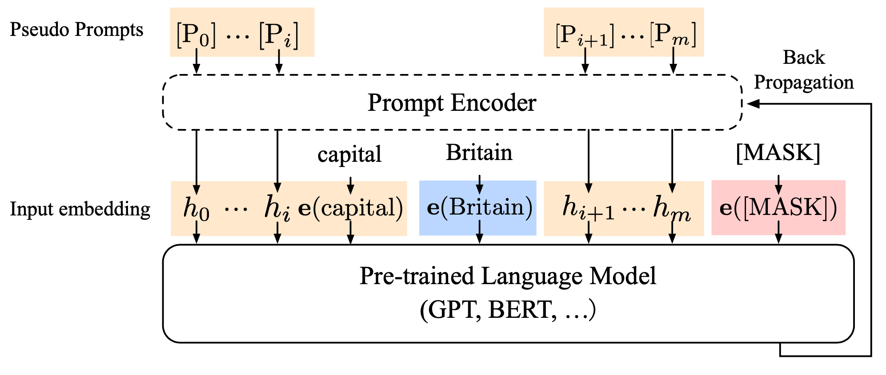
P-tuning 中存在两个主要的优化挑战：
P-tuning 比前缀调优更灵活，因为它可以在提示中间而不仅是在开头插入可训练词元。使用任务特定的锚点词元就像将人工提示工程与可训练提示结合在一起。
Prompt Tuning（Lester et al. 2021）大大简化了前缀调优的思想，仅允许为每个下游任务额外添加 k 个可调词元，并将其前置到输入文本前。条件生成是 p_{\theta, \theta_P}(Y \vert [P; X])，其中 P 是“伪提示”，其参数 \theta_P 可通过反向传播训练。X 和 P 都是嵌入向量，我们有 X \in \mathbb{R}^{n \times d^e}, P \in \mathbb{R}^{k \times d^e} 和 [P;X] \in \mathbb{R}^{(n+k) \times d^e}，其中 d^e 是嵌入空间维度。
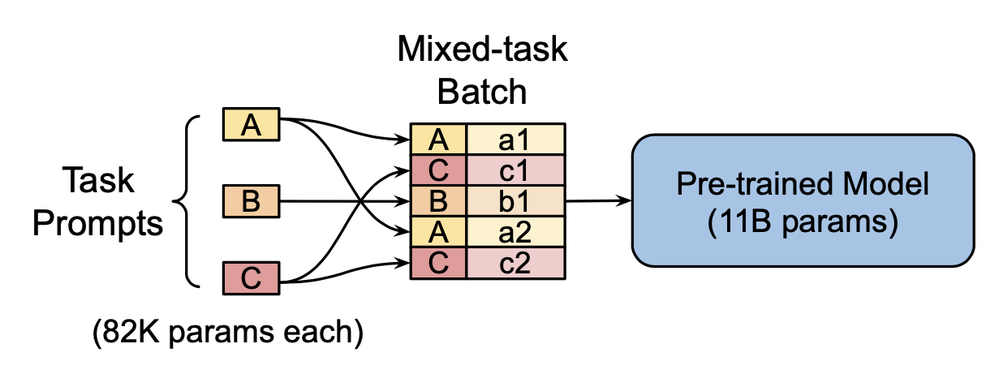
实验研究了几种提示初始化方案：
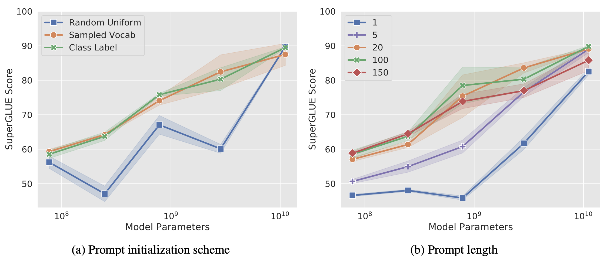
预训练目标对提示调优的质量也有很大影响。T5 的“span corruption”在这里不是一个好的选择。
Prompt Tuning 被发现不太容易对特定数据集过拟合。为了评估对数据偏移问题的鲁棒性，他们在一个任务的一个数据集上训练模型，然后在不同领域的测试数据集上评估。Prompt Tuning 更具弹性，能更好地泛化到不同领域。
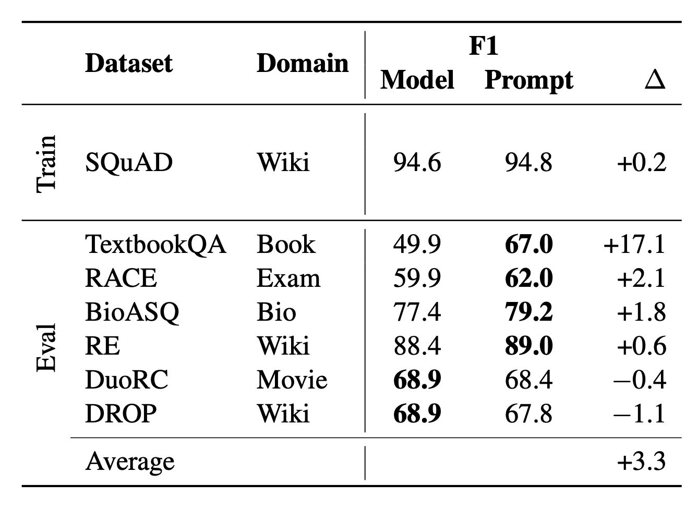
基于启发式的搜索
改写是一种快速探索与已知版本相似更多提示的方法，可通过回译实现。使用回译，初始提示被翻译成另一种语言的 B 个候选，然后每个再翻译回原语言的 B 个候选。最终得到的总共 B^2 个候选根据其往返概率进行打分和排序。
Ribeiro et al (2018) 通过为输入 x 生成多种改写 \{x’\}，直到触发目标函数 f 的不同预测，从而识别语义等价的对抗规则（SEA）：
其中分数 p(x’\vert x) 与将 x 翻译成多种语言然后再翻译回原语言成正比。
SEA 规则的例子包括（What NOUN→Which NOUN）、（WP is → WP’s’）、（was→is）等。它们被视为模型中的“bug”。在模型训练中应用这些规则作为数据增强有助于增强模型鲁棒性并修复 bug。
Jiang et al (2020) 试图通过自动发现更好的提示来验证训练好的语言模型是否知道某些知识。在知识检索范围内，事实知识以三元组 \langle x, r, y \rangle（主体、关系、客体）的形式表示。提示可以从训练句子（如 Wikipedia 描述）中挖掘，或通过改写扩展。
有趣的是，提示中的一些微小修改可能带来巨大收益，如图 X 所示。
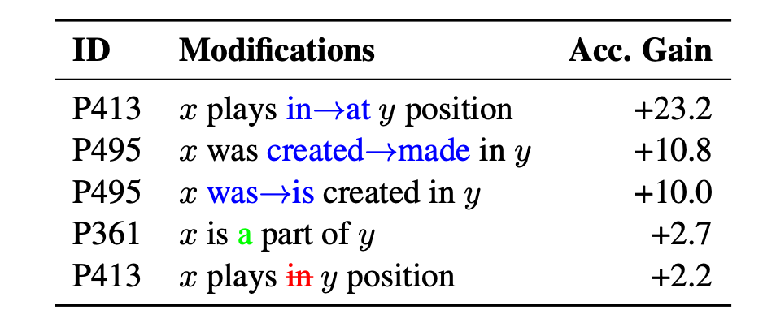
微调
微调是一种引导语言模型输出期望内容的直观方式，通常通过在监督数据集上训练或使用强化学习实现。我们可以微调模型中的所有权重，或将微调限制在顶层或额外层上。
条件训练
条件训练旨在学习一个以控制变量 z 为条件的生成模型 p(y \vert x, z)。
Fan et al (2018) 为两步故事生成训练了一个条件语言模型。首先，一个模型输出故事梗概，然后故事写作模型根据该梗概创作故事。通过融合模型架构实现对梗概的条件机制。融合模型强制一种残差学习形式，让故事写作模型专注于学习第一个梗概生成模型缺失的内容。同样针对故事生成，Peng et al (2018) 实验了一个以结局情感为条件的生成器 LM p(x_t \vert x_{<t}, z)，其中 z 是故事结局的标签（悲伤、快乐或中性）。他们的语言模型是双向 LSTM，标签被映射到一个学习的嵌入中，然后融合到 LSTM cell 中。
CTRL（Keskar et al., 2019；代码）旨在使用可控数据集训练一个以控制码 z 为条件的语言模型。CTRL 通过在带控制码前缀的原始文本序列上训练来学习条件分布 p(x \vert z)，例如 [horror]、[legal] 等。然后学习到的模型能够根据提示前缀生成文本。训练数据包含 Wikipedia、OpenWebText、书籍、Amazon 评论、Reddit 语料等，每个数据集都被赋予一个控制码，Reddit 语料中的每个 subreddit 有自己的主题作为控制码。
控制码也可以用于给定词元的领域标注，因为 p(z \vert x) \propto p(x \vert z) p(z)，假设领域先验是均匀的。CTRL 的一个限制是无法控制不生成什么（例如避免毒性内容）。
注意 CTRL 是从零开始训练一个 Transformer 模型的。然而，对同一数据集内的所有文本使用相同的控制码进行标注（例如所有 Wikipedia 文章都用“wikipedia”作为控制码）感觉限制较大。考虑到我们通常需要高度定制化的控制码，但只有有限的标注数据，我认为用与 CTRL 相同的方式在一个小型标注数据集上微调无条件语言模型也能取得不错效果。尽管需要多少数据以及样本质量如何仍有待实验验证。
强化学习微调
用强化学习针对任意且可能不可微的奖励函数微调序列模型多年前已被证明有效（Ranzato et al., 2015）。强化学习微调可以解决教师强制方法带来的几个问题。在教师强制下，模型在训练时仅在每个单独解码步骤上最小化最大似然损失，但在测试时需要从零预测整个序列。这种训练与测试之间的差异可能导致暴露偏差和累积误差。相反，强化学习微调能够直接在序列层面优化任务特定指标，例如翻译的 BLEU（Ranzato et al., 2015，Wu et al., 2016，Nguyen et al., 2017）、摘要的 ROUGE（Ranzato et al., 2015，Paulus et al., 2017，Wu and Hu, 2018）以及故事生成的定制指标（Tambwekar et al., 2018）。
Ranzato et al (2015) 将 REINFORCE 应用于训练 RNN 模型进行序列生成任务。模型首先使用交叉熵损失（ML 损失）训练预测下一个词元，然后交替使用 ML 损失和 REINFORCE（RL 损失）进行微调。在第二个微调阶段，下一词元预测的训练步数逐渐减少直至为零，最终只使用 RL 损失。当时的实验表明，这种序列级强化学习微调比多个监督学习基线有显著改进。
Google 在他们的神经机器翻译系统中实现了类似方法（Wu et al., 2016），Paulus et al (2017) 将这种方法用于摘要任务。训练目标包含两部分：下一词元预测的 ML 损失 \mathcal{L}_\text{ML} = \sum_{(x, y^*)\sim\mathcal{D}} \log p_\theta(y^* \vert x)，以及最大化期望奖励的 RL 损失 \mathcal{L}_\text{RL}，其中序列奖励由 BLEU 或 ROUGE 衡量。模型首先用 \mathcal{L}_\text{ML} 训练直到收敛，然后用两个损失的线性组合 \mathcal{L}_\text{mix} = \alpha \mathcal{L}_\text{ML} + (1 - \alpha)\mathcal{L}_\text{RL} 进行微调。
Google NMT 的 RL 损失是最大化期望 BLEU 分数：
其中 y 是预测序列，y^* 是真实答案。
Paulus et al (2017) 增加了一个基于两个输出序列奖励差异的额外加权项 y（按预测概率采样下一个词元）和 \hat{y}（贪心选择最可能的词元）。该 RL 损失在采样序列 y 获得比贪心基线 \hat{y} 更高奖励时，最大化其条件似然：
基于人类偏好的强化学习微调
奖励学习对于定义人类偏好至关重要。像 BLEU 或 ROUGE 这样的定量度量计算序列之间词和 n-gram 短语的重叠，并不总是与人类评判的更好质量相关。从人类反馈中学习奖励（Christiano et al., 2017）是更好对齐我们所度量与我们真正关心内容的方法。人类反馈已被应用于学习故事生成（Yi et al., 2019）和摘要（Böhm et al., 2019，Ziegler et al., 2019，Stiennon et al., 2020）等应用的奖励函数。
为了生成更连贯的对话，Yi et al (2019) 针对对话对（用户话语、系统回复）收集了 4 种二元人类反馈：系统回复是否（1）全面、（2）切题、（3）有趣以及（4）能引导对话继续。 训练一个评估器来预测人类反馈，然后用它对集束搜索样本重新排序、对模型进行微调，或两者兼而为之。（实际上他们没有使用强化学习微调，而是用评估器在监督微调中提供判别损失。）
定义一个由 \psi 参数化的学习奖励函数 R_\psi(x, y)，作为给定输入 x 时输出 y 质量的度量。
为了学习由人类判断定义的真实奖励 R^*，Böhm et al (2019) 比较了两种损失函数：
（1）回归损失：简单最小化均方误差。
（2）偏好损失：学习与真实奖励一致，
他们的实验表明偏好损失取得了最佳性能，其中奖励模型是 BERT 句子嵌入之上的一个薄 MLP 层。
Ziegler et al (2019) 通过让人类从给定输入 x \sim \mathcal{D} 的几个选项 \{y_i\} 中选择最佳候选 y_b 来收集人类标签。候选由 y_0, y_1 \sim p(.\vert x), y_2, y_3 \sim \pi(.\vert x) 采样。我们应该意识到，当真实答案模糊时，人类标注可能存在很高分歧。
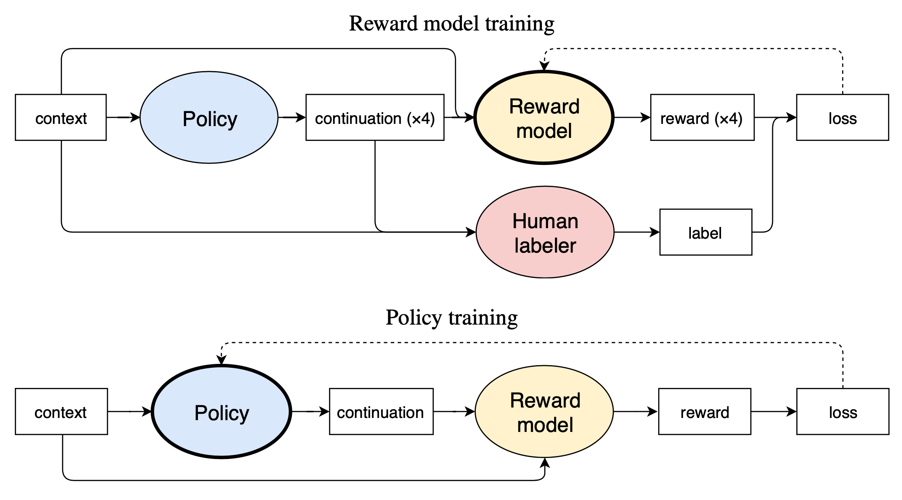
奖励模型由一个预训练语言模型加上最终嵌入输出的一个额外随机线性层实现。它被训练来最小化以下损失：
为了在训练期间保持尺度一致，奖励模型被归一化至均值为 0、方差为 1。
在强化学习微调期间，由预训练语言模型 p 初始化得到的策略 \pi 通过 策略梯度算法 结合上述学习的奖励模型进行优化。为了避免策略偏离其原始行为过远，加入了 KL 惩罚：
如果运行在线数据收集，人类标签收集过程会在强化学习微调期间持续进行，因此人类标注者可以审查最新策略生成的结果。人类标签数量在整个训练过程中均匀分布。同时奖励模型也会定期重新训练。在线数据收集对摘要任务很重要，但对文本续写任务不重要。在他们的实验中，联合训练共享参数的奖励模型和策略效果不佳，由于数据集大小存在巨大不平衡，可能导致过拟合。
在后续工作（Stiennon et al., 2020）中，人类标签收集被进一步简化为在一对摘要 y_b \in\{y_0, y_1\} 中选择最佳选项。奖励模型损失被更新为优化所选摘要的对数赔率：
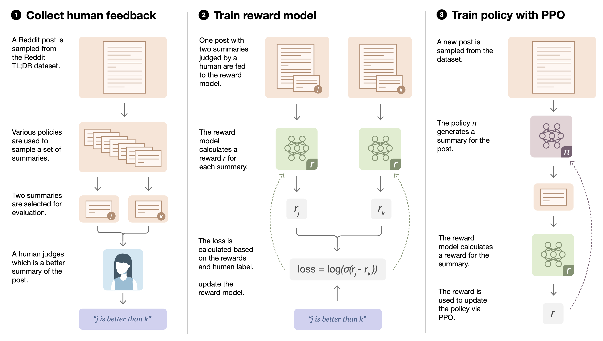
使用可控层的引导式微调
与微调整个模型不同，仅微调一小部分额外参数而保持基础模型固定在计算上更廉价。
在计算机视觉中，即插即用生成网络（PPGN；Nguyen et al., 2017）通过将判别器 p(a \vert x) 插入基础生成模型 p(x) 来生成具有不同属性的图像。然后，具有期望属性 a 的样本可以从 p(x \vert a) \propto p(a \vert x)p(x) 中采样。受 PPGN 启发，即插即用语言模型（PPLM；Dathathri et al., 2019）将一个或多个简单属性模型与预训练语言模型结合，用于可控文本生成。
给定属性 a 和生成样本 x，设属性模型为 p(a\vert x)。为了控制内容生成，当前时间步 t 的潜在表示 H_t（每层包含一组键值对），可以通过两个梯度之和的方向进行偏移 \Delta H_t：
为了改变输出，在解码时 PPLM 运行一次前向→一次反向→一次前向，共三次传递：
其中 \gamma 是每层设置的归一化缩放系数，\alpha 是步长。该更新可以重复 m \in [3, 10] 次。 3. 最终的前向传递使用更新后的潜在 \tilde{H}_t = H_t + \Delta H_t 重新计算词表上的新分布。从更新后的分布中采样下一个词元。
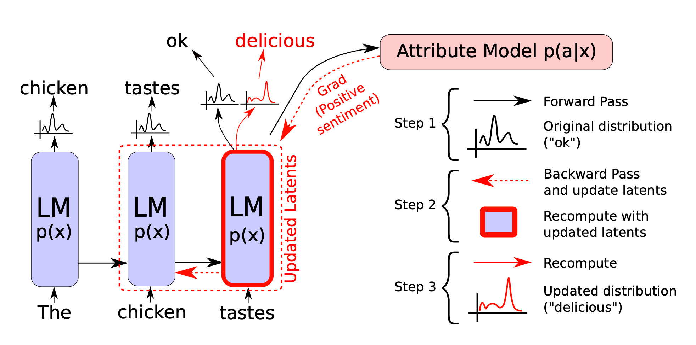
多个属性模型可以在生成过程中以自定义权重混合匹配，充当一组“控制旋钮”。PPLM 论文探索了两种类型的属性模型：
为了鼓励模型至少输出一次期望词而非每步都输出，他们通过最大梯度范数对梯度进行归一化。 有趣的是，他们发现增加词袋中词生成概率的同时，也会增加生成同一主题相关但不完全相同词的概率。 2. 基于学习分类器的判别器属性模型通过分布而非硬样本定义偏好。
为了确保语言的流畅性，PPLM 应用了两个额外设计：
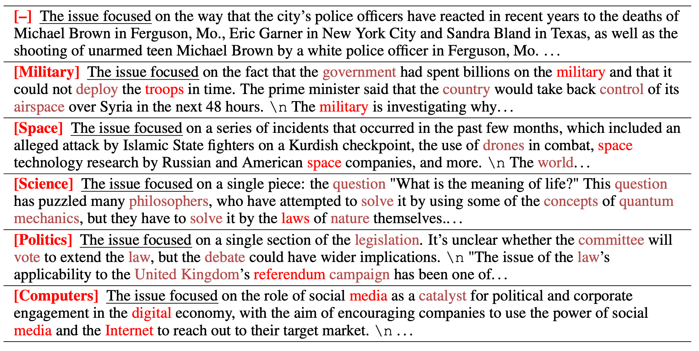
有趣的是，他们发现在不同主题上的可控程度存在很大差异。有些主题（宗教、科学、政治）比其他主题（计算机、太空）更容易控制。
PPLM 的一个明显缺点是，由于每个解码步骤都要多次传递，测试时计算量变得昂贵得多。
与 PPLM 类似，DELOREAN（DEcoding for nonmonotonic LOgical REAsoNing；Qin et al., 2020）通过反向传播引入未来上下文。给定输入文本 \mathbf{x}，DELOREAN 旨在生成续写 \mathbf{y} = [y_1, \dots, y_N]，使得 y 满足由上下文 z 定义的某些约束。为了保持生成的可微性，跟踪 y 的软表示 \tilde{\mathbf{y}}=(\tilde{y}_1, \dots, \tilde{y}_N)，其中 \tilde{y}_i \in \mathbb{R}^V 是词表上的 logits。\tilde{\mathbf{y}}^{(t)} 是迭代 t 时的软表示。
给定迭代 t 时的表示 \tilde{y}^{(t-1)}，它运行以下过程：
Side-tuning（Zhang et al., 2019）训练一个轻量级的侧网络，在原始模型输出之上学习残差，而不修改预训练模型权重。与 PPLM 不同，它不更新隐藏状态上的梯度。这是一种用于增量学习的简单而有效的方法。基础模型被视为黑盒模型，不一定是神经网络。Side-tuning 设置假设基础模型和侧模型输入完全相同，且侧模型独立学习。
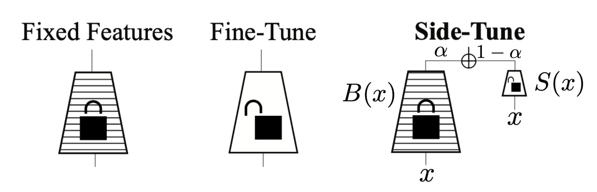
论文探索了融合基础模型和侧模型预测的不同策略：乘积效果最差，而求和（\alpha-blending）、MLP 和 FiLM 效果相当。当用中等数量数据训练且基础网络较大时，侧调优能取得更好性能。
辅助调优（Zeldes et al., 2020）用一个辅助模型补充原始预训练模型，该模型根据目标任务偏移输出分布。基础模型和辅助模型的输出在 logits 层面合并。组合模型被训练来最大化目标输出的似然 p(x_t\vert x_{<t}, z)。
p(x_t\vert x_{<t}, z) 的条件概率可以分解为两部分：
根据贝叶斯规则，我们有
因此辅助模型 \text{logits}_\text{aux}(x_t \vert x_{<t}, z)) 实际上应该学习预测 p(z \vert x_{\leq t})。在 Zeldes et al., 2020 的实验中，辅助模型可以复用预训练语言模型的中间层进行特征提取。
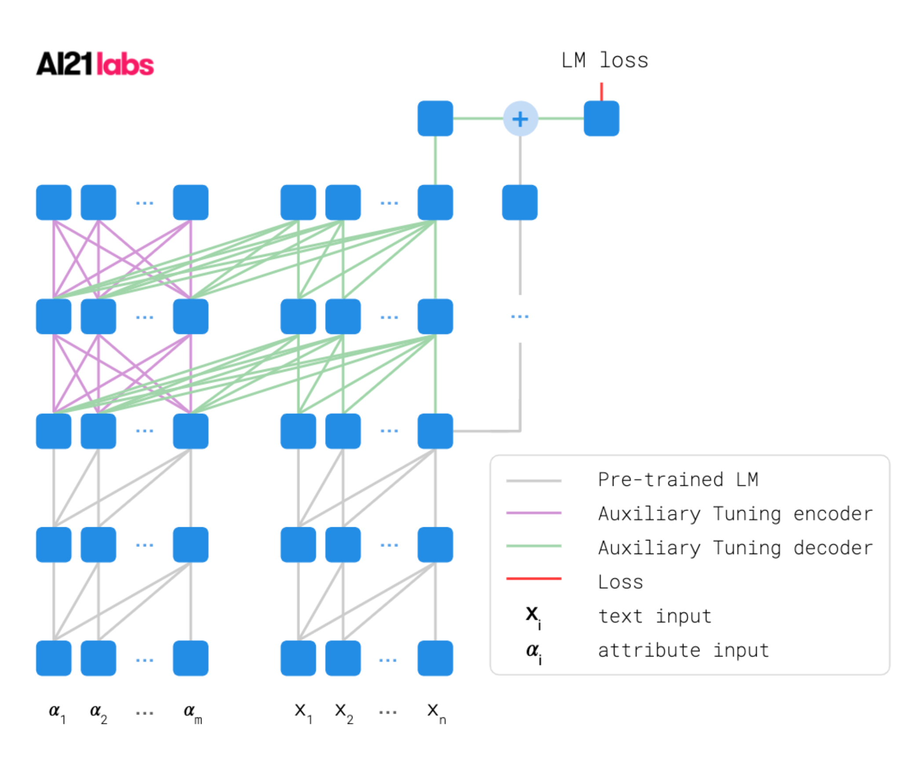
GeDi（Kruse et al., 2020）通过生成式判别器引导文本生成。判别器实现为类别条件语言模型（CC-LM），p_\theta(x_{1:t} \vert z)。判别器在每个解码步骤通过贝叶斯规则对所有可能的下一个词元计算分类概率，通过在两个对比的类别条件分布上归一化实现：
GeDi 依赖 p_\theta(x_{1:t} \vert z) 和 p_\theta(x_{1:t} \vert \bar{z}) 之间的对比来计算序列属于期望类别的概率。判别器损失是最大化期望属性 z 的概率：
其中 p(z) = \exp(b_z) / \sum_{z’} \exp(b_{z’}) 和 b_z 是学习到的类别先验。概率通过当前序列长度 \tau 归一化，以增强不同长度生成序列的鲁棒性。\tau_i 是数据集中第 i 个输入 x^{(i)} 的序列长度。
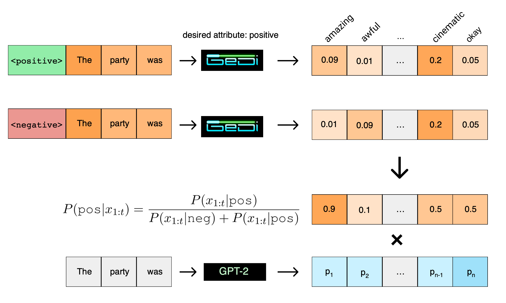
他们使用类似 CTRL 的控制码微调了一个 GPT2-medium 模型，通过判别损失和生成损失的线性组合形成 CC-LM。然后这个判别器模型被用作 GeDi，来引导像 GPT2-XL 这样更大的语言模型的生成。
从 GeDi 解码的一种方式是从加权后验 p^w(x_{t+1}\vert x_{1:t}, z) \propto p(z \vert x_{1:t+1})^w p(x_{t+1} \vert x_{1:t}) 中采样，其中 w>1 对期望类别 z 施加额外偏置。在采样过程中，只选择类别或下一个词元概率大于某阈值的词元。
他们在实验中用 GeDi 引导的生成展示了强大的可控性，并且比 PPLM 快 30 倍。
分布方法
带分布控制的生成（GDC；Khalifa, et al. 2020）将可控文本生成建模为在约束下优化概率分布。它包含两个主要步骤。
步骤 1：学习目标模型的 EBM
将预训练语言模型记为 a，具有期望特征的目标语言模型记为 p。期望特征可由一组在 x \in X 上的预定义实值特征函数 \phi_i(x), i=1,\dots,k 定义，表示为向量 \boldsymbol{\phi}。当根据期望模型 p 采样序列 x \in X 时，特征的期望 \mathbb{E}_{x\sim p}\boldsymbol{\phi}(x) 应接近 \bar{\boldsymbol{\mu}}，称为“矩约束”。特征函数 \phi_i 可以有离散值（例如二分类器的恒等函数）或连续概率。同时，微调后的模型 p 不应偏离 a 过远，通过保持较小的 KL 散度来实现。
总之，给定预训练模型 a，我们希望找到目标模型 p 使得：
其中 \mathcal{C} 是所有满足矩约束的 X 上分布的集合。
根据信息几何中的定理，p 可以用指数函数形式的 EBM（基于能量的模型；未归一化概率分布）P 近似，使得 p(x) \propto P(x) 且 p(x)=\frac{1}{Z}P(x) 其中 Z=\sum_x P(x)。基于能量的模型可近似为：
定义重要性权重 w(x, \boldsymbol{\lambda}) = \frac{P(x)}{a(x)} = \exp\langle\boldsymbol{\lambda}\cdot\boldsymbol{\phi}(x)\rangle。给定大量从预训练模型 x_1, \dots, x_N \sim a(x) 采样的序列，
使用目标 |\boldsymbol{\mu}(\boldsymbol{\lambda}) - \bar{\boldsymbol{\mu}}|^2_2 上的 SGD，我们可以得到 \boldsymbol{\lambda} 的估计值和 P(x)=a(x)\exp\langle\boldsymbol{\lambda}\cdot\boldsymbol{\phi}(x)\rangle 的表示。P(x) 是一个序列 EBM，因为 a 是自回归模型。
步骤 2：学习目标概率分布
EBM P(x) 可以计算两个序列的概率比，但无法在知道 Z 的情况下从 p(x) 中采样。为了从序列 EBM 中采样，论文提出使用 Distributional Policy Gradient（DPG；不是 策略梯度算法），目标是通过最小化交叉熵 H(p, \pi_\theta) 得到自回归策略 \pi_\theta 来近似目标分布 p。DPG 运行一系列迭代。在每次迭代中，使用提议分布 q 进行采样，并且也可以用重要性权重修正交叉熵损失：
为了学习这样的 \pi_\theta，论文采用 DPG 的 KL 自适应版本：仅当估计策略 q 更接近 \pi_\theta 时才更新 p。这个自适应步骤对快速收敛很重要。
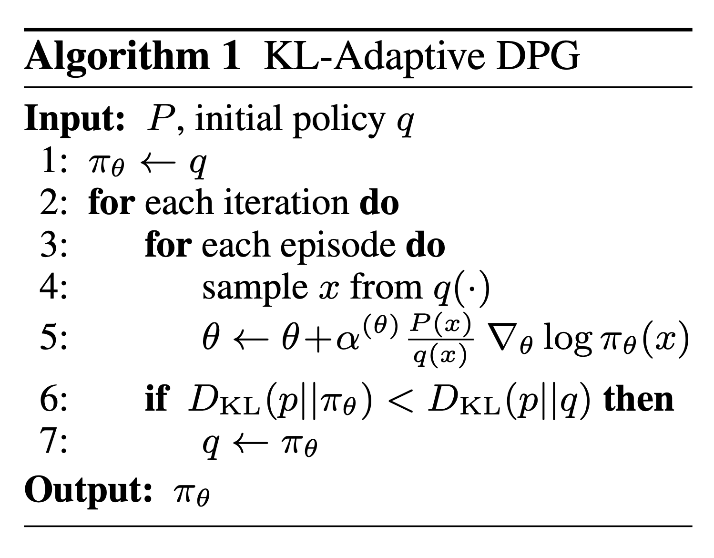
该方法可用于对可控文本生成中的各种约束建模：
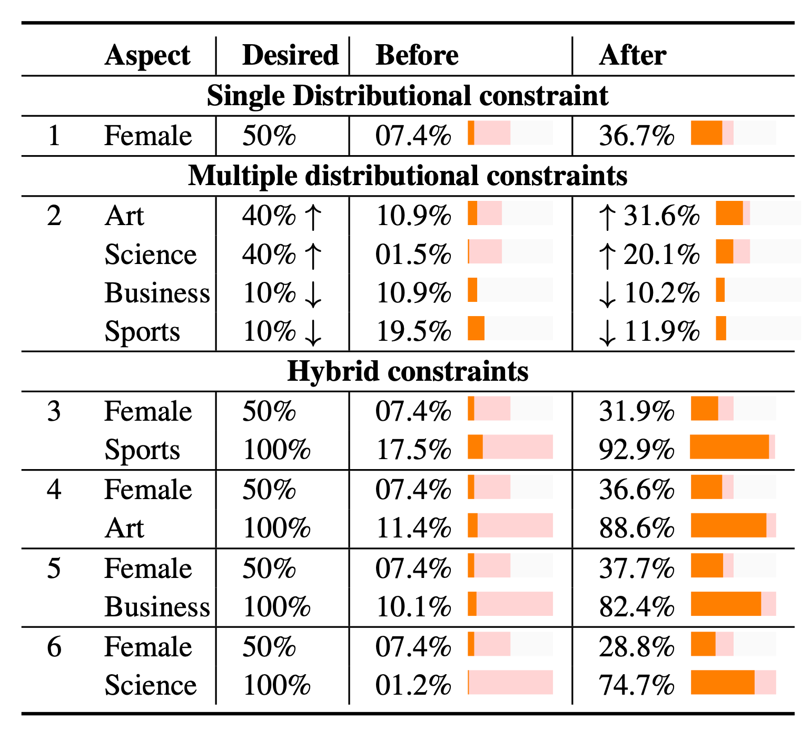
与其他基线相比，使用点约束的 GDC 与基础模型 a 偏离较小，并产生更平滑的曲线。
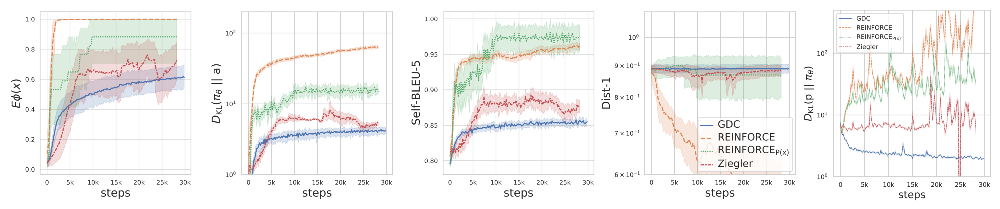
非似然训练
语言模型训练中标准最大化对数似然损失的方式会导致错误的词元分布，这仅靠智能解码方法无法修复。这类模型倾向于过于频繁地输出高频词，而极少输出低频词，尤其是在使用确定性解码（如贪心、集束搜索）时。换句话说，它们对自己的预测过于自信。
非似然训练（Welleck & Kulikov et al. 2019）试图解决这个问题，并直接将对不想要内容的偏好纳入训练目标。它结合两种更新：
给定词元序列 (x_1, \dots, x_T) 和第 t 步的一组负候选词元 \mathcal{C}^t = \{c_1, \dots , c_m\}，其中每个词元 x_i, c_j \in \mathcal{V}，第 t 步的组合损失定义为：
构造 \mathcal{C}^t 的一种方法是从模型生成的序列中随机选择候选。
非似然训练可以扩展到序列级别，其中负续写由每个步骤的负候选集合序列定义。它们应该被设计为惩罚我们不喜欢的属性。例如，我们可以如下惩罚重复的 n-gram：
他们的实验使用非似然训练来避免语言模型输出中的重复，结果表明与标准 MLE 训练相比，在减少重复和增加唯一词元方面取得了更好的效果。
引用
引用格式：
Weng, Lilian. (Jan 2021). Controllable neural text generation. Lil’Log. https://lilianweng.github.io/posts/2021-01-02-controllable-text-generation/.
@article{weng2021conditional,
title = "Controllable Neural Text Generation.",
author = "Weng, Lilian",
journal = "lilianweng.github.io",
year = "2021",
month = "Jan",
url = "https://lilianweng.github.io/posts/2021-01-02-controllable-text-generation/"
}
参考文献
[1] Patrick von Platen. “How to generate text: using different decoding methods for language generation with Transformers” Hugging face blog, March 18, 2020.
[2] Angela Fan, et al. “Hierarchical Neural Story Generation/” arXiv preprint arXiv:1805.04833 (2018).
[3] Ari Holtzman et al. “The Curious Case of Neural Text Degeneration.” ICLR 2020.
[4] Marjan Ghazvininejad et al. “Hafez: an interactive poetry generation system.” ACL 2017.
[5] Ari Holtzman et al. “Learning to write with cooperative discriminators.” ACL 2018.
[6] Ashutosh Baheti et al. “Generating More Interesting Responses in Neural Conversation Models with Distributional Constraints.” EMNLP 2018.
[7] Jiatao Gu et al. “Trainable greedy decoding for neural machine translation.” EMNLP 2017.
[8] Kyunghyun Cho. “Noisy Parallel Approximate Decoding for Conditional Recurrent Language Model.” arXiv preprint arXiv:1605.03835. (2016).
[9] Marco Tulio Ribeiro et al. “Semantically equivalent adversarial rules for debugging NLP models.” ACL 2018.
[10] Eric Wallace et al. “Universal Adversarial Triggers for Attacking and Analyzing NLP.” EMNLP 2019. [code]
[11] Taylor Shin et al. “AutoPrompt: Eliciting Knowledge from Language Models with Automatically Generated Prompts.” EMNLP 2020. [code]
[12] Zhengbao Jiang et al. “How Can We Know What Language Models Know?” TACL 2020.
[13] Nanyun Peng et al. “Towards Controllable Story Generation.” NAACL 2018.
[14] Nitish Shirish Keskar, et al. “CTRL: A Conditional Transformer Language Model for Controllable Generation” arXiv preprint arXiv:1909.05858 (2019).[code]
[15] Marc’Aurelio Ranzato et al. “Sequence Level Training with Recurrent Neural Networks.” ICLR 2016.
[16] Yonghui Wu et al. “Google’s Neural Machine Translation System: Bridging the Gap between Human and Machine Translation.” CoRR 2016.
[17] Romain Paulus et al. “A Deep Reinforced Model for Abstractive Summarization.” ICLR 2018.
[18] Paul Christiano et al. “Deep Reinforcement Learning from Human Preferences.” NIPS 2017.
[19] Sanghyun Yi et al. “Towards coherent and engaging spoken dialog response generation using automatic conversation evaluators.” INLG 2019.
[20] Florian Böhm et al. “Better rewards yield better summaries: Learning to summarise without references.” EMNLP 2019. [code]
[21] Daniel M Ziegler et al. “Fine-tuning language models from human preferences.” arXiv preprint arXiv:1909.08593 (2019). [code]
[22] Nisan Stiennon, et al. “Learning to summarize from human feedback.” arXiv preprint arXiv:2009.01325 (2020).
[23] Sumanth Dathathri et al. “Plug and play language models: a simple approach to controlled text generation.” ICLR 2020. [code]
[24] Jeffrey O Zhang et al. “Side-tuning: Network adaptation via additive side networks” ECCV 2020.
[25] Ben Kruse et al. “GeDi: Generative Discriminator Guided Sequence Generation.” arXiv preprint arXiv:2009.06367.
[26] Yoel Zeldes et al. “Technical Report: Auxiliary Tuning and its Application to Conditional Text Generatio.” arXiv preprint arXiv:2006.16823.
[27] Thomas Scialom, et al. “Discriminative Adversarial Search for Abstractive Summarization” ICML 2020.
[28] Clara Meister, et al. “If beam search is the answer, what was the question?” EMNLP 2020.
[29] Xiang Lisa Li and Percy Liang. “Prefix-Tuning: Optimizing Continuous Prompts for Generation.” arXiv preprint arXiv:2101.00190 (2021).
[30] Lianhui Qin, et al. “Back to the Future: Unsupervised Backprop-based Decoding for Counterfactual and Abductive Commonsense Reasoning.” arXiv preprint arXiv:2010.05906 (2020).
[31] Muhammad Khalifa, et al. “A Distributional Approach to Controlled Text Generation” Accepted by ICLR 2021.
[32] Aditya Grover, et al. “Bias correction of learned generative models using likelihood-free importance weighting.” NeuriPS 2019.
[33] Yuntian Deng et al. “Residual Energy-Based Models for Text Generation.” ICLR 2020.
[34] Brian Lester et al. “The Power of Scale for Parameter-Efficient Prompt Tuning.” arXiv preprint arXiv:2104.08691 (2021).
[35] Xiao Liu et al. “GPT Understands, Too.” arXiv preprint arXiv:2103.10385 (2021).
[36] Welleck & Kulikov et al. “Neural Text Generation with Unlikelihood Training” arXiv:1908.04319 (2019).